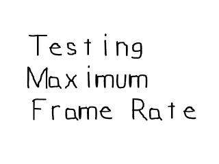

在处理游戏时，性能始终是一个需要关心的问题。无论你是否需要知道你的游戏可以以多快的帧率运行，或者你只是想知道你能从SDL的渲染中得到多大益处，了解如何计算帧率是一个有用的技能。本节课将教你制作一个简单的帧率测试。 //跟踪帧数
int frame = 0;
//计算帧率的计时器
Timer fps;
//更新标题的计时器
Timer update;
这是我们的帧率测试程序中的3个关键变量。其中，"frame"跟踪了已经渲染了多少帧，"fps"是跟踪渲染已用时间的计时器，"update"是我们用来更新标题的计时器，标题内容就是我们要展示的帧率。
//启动update计时器
update.start();
//启动frame计时器
fps.start();
//当用户还没退出
while( quit == false )
{
当所有初始化完毕并且加载完成后，我们启动计时器，然后进入主循环。
//当有事件需要处理
while( SDL_PollEvent( &event ) )
{
//如果用户单击了窗口右上角的关闭按钮
if( event.type == SDL_QUIT )
{
//退出程序
quit = true;
}
}
这里没有高级的事件处理，我们仅仅处理了用户的关闭操作。
//应用表面
apply_surface( 0, 0, image, screen );
//更新窗口
if( SDL_Flip( screen ) == -1 )
{
return 1;
}
//增加帧计数器的值
frame++;
处理了事件后，我们应用了表面，更新了窗口，然后增加了帧计数器的值。
//自从标题上次更新已经过了1秒
if( update.get_ticks() > 1000 )
{
//以string形式表示的帧率
std::stringstream caption;
//计算帧率并创建string
caption << "Average Frames Per Second: " << frame / ( fps.get_ticks() / 1000.f );
//重置标题
SDL_WM_SetCaption( caption.str().c_str(), NULL );
//重启update计时器
update.start();
}
}
这里是我们展示帧率的代码。
首先我们检查一下自从上次更新标题到现在是否至少经过了1秒。
如果是时候更新标题，我们创建一个string stream对象，并将帧率信息放入其中。
帧率是通过帧数除以渲染时间（以秒为单位）计算出来的。
我们更新了标题后，继续运行我们的帧率测试程序。
首先我们检查一下自从上次更新标题到现在是否至少经过了1秒。
如果是时候更新标题，我们创建一个string stream对象，并将帧率信息放入其中。
帧率是通过帧数除以渲染时间（以秒为单位）计算出来的。
我们更新了标题后，继续运行我们的帧率测试程序。